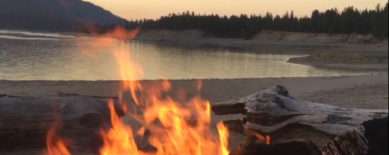
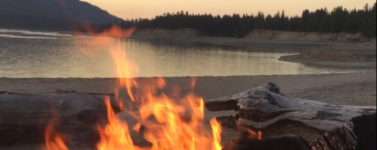
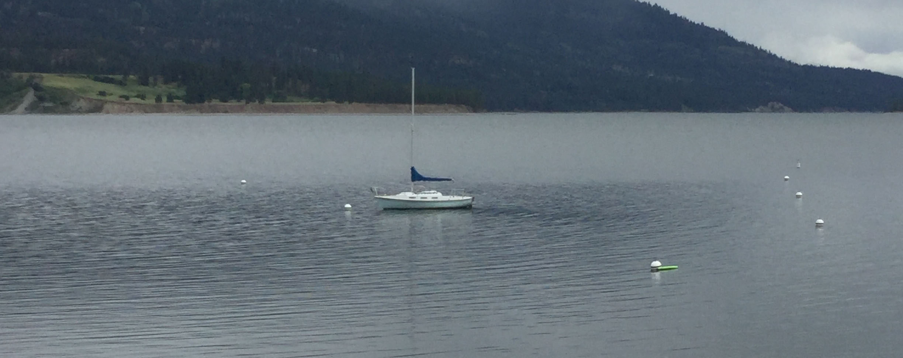
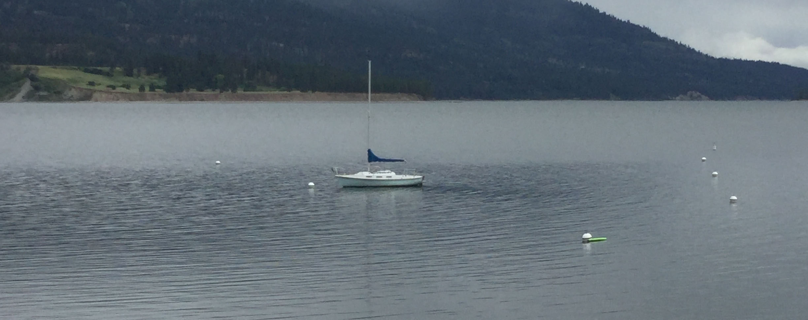

 


Boating in Tri-County Washington
Boating is a very popular activity especially during the summer. One of the most popular places to boat is Lake Roosevelt although it's by no means the only one. If you are looking for other lakes you can take motorized boats on the Boundary Dam reservoir and Curlew Lake which are other great options. If you are looking for something even smaller there are hundreds of small lakes in the area not all of which will allow motorized boats.
Lake Roosevelt
Lake Roosevelt is over a hundred miles long and over a hundred feet deep in several areas. There are several sandy beaches along the lake and lots of fantastic fishing including for Sturgeon. The largeness of this lake makes it easy for it to not feel crowded although docks and marinas are often full on holiday weekends.
Smaller
Boundary Dam Reservoir
The Boundary Dam Reservoir is located in Pend Orielle County and features stunning views and large amounts of wildlife. Located near the boat dock for the reservoir is Pee Wee falls a 200 feet tall waterfall. The Reservoir itself winds through canyons and the view from the water is often of stunning cliffs. This area is less crowded than Lake Roosevelt but is a great place to swim, fish, and sight see. However, if you go too far up the canyon you start to run into turbulent water.
Curlew Lake
Curlew Lake is located in Ferry County. This lake is shallower than the Boundary Dam Reservoir and is out in the open meaning it gets more sun than the Boundary Dam Reservoir. The lake is surrounded by small residences which leaves it feeling less wild but giving it a homier feel. There are numerous fishing opportunities and the lake is often quiet due to its remote location.
Even Smaller
Trout Lake
Trout Lake is located off of Highway 20 in Ferry County. This lake is very small and better suited for canoes and kayaks. Located in a valley it gets limited sun but has warmer water than other lakes. This lake is off the beaten trail and you can often be the only one during the week although the camp site is almost always filled on the weekends. This lake also has some good opportunities for seeing birds and often a beaver. This lake is less than a mile long but its solitude and natural beauty makes it a great place to spend an afternoon paddling around.
Lake Elen
Lake Elen is located in Ferry County and is a great place for small fishing boats, kayaks, and canoes. There a lot of smaller fish and a few small islands. It gets more sun than Trout Lake but can become grown in by late summer. This lake is one of the warmest Lakes which can make it a good option for an afternoon in early summer.
Deer Lake
Deer Lake is located in Stevens County just off of Highway 395. It is a great place to go fishing and is larger than Lake Elen or Trout Lake. This lake is a little less isolated and more crowded than other smaller lakes but is easier to access than Trout Lake or Lake Elen.